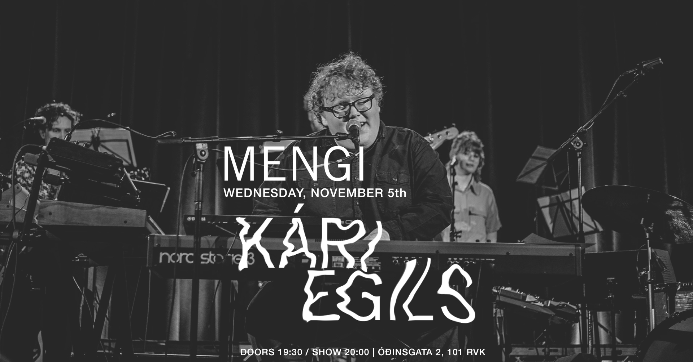
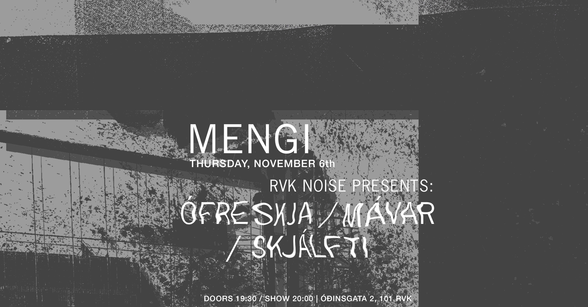

This Week
05.01 - Kári Egils
Tickets MY STATIC WORLD VÍNYLÚTGÁFA doors 17:30 / show 18:00 pay what u can - 2500kr suggested Haldið verður uppá vínylútgáfu My Static World, plötu Kára Egils, á vínyl í Mengi miðvikudaginn 6. nóv kl. 18. Kári og hljómsveit taka nokkur vel valin lög og hægt verður að kaupa vínyl og fá hann áritaðan ef áhugi er á því. https://kariegils.lnk.to/mystaticworld Kári Egils is a talented young singer/songwriter and pianist from Iceland. In March 2024 he received the “Brightest hope” award from the president of Iceland. The award is given to the young musician in any genre that is considered the most promising of the year by the jury. Kári first made waves with his critically acclaimed debut album, Palm Trees In The Snow, which offered a fresh take on 70s influences and newer pop and indie. With his highly anticipated follow-up album, My Static World, released in March 2025, Kári expands his sonic palette, incorporating more modern sounds and production techniques, while retaining the melodic and thoughtful songwriting that made his debut stand out. Kári’s artistic growth is especially noticeable on standout tracks like Carry You Home, In The Morning, and Midnight Sky. Kári’s musical talent became obvious when he started studying the piano at seven years old. He started in classical music, and branched out to jazz piano and improvisation by the age of ten. Early on, he began writing his own music and developed an interest in pop music, showing an uncanny sense of melody.
06.01 RVK Noise Presents: Ófreskja/Mávar/Skjálfti
Tickets
RVK NOISE PRESENTS:
ÓFRESKJA
MÁVAR
SKJÁLFTI
doors 19:30 / show 20:00
2500kr / 2000kr for students / pay what u can
Ófreskja
Ófreskja explores sound through home made mediums. Using homemade instruments and synthesizers she conjures up hellish noisescapes that explore the interzone where the spiritual and the physical meet.
Mávar
Mávar makes apocalyptic industrial noise. His sound is a mixture of industrial synthesis and mangled samples that add up to a brooding concoction of heavy electronics.
Skjálfti
Skjálfti works with distorted, warped field recordings that he mangles into unrecognisable shapes of harsh noise. Thematically focused on religion and spirituality his pieces are attempts to communicate with a higher power
07.01 Gurgl
Tickets
GURGL
doors 19:30 / show 20:00
2500kr / 2000kr students / pay what u can
GURGL
Hannes Arason - trumpet
Moritz Christiansen - saxophone
Snorri Skúlason - bass
Óskar Kjartansson - drums
"Gurgl er nýtt samvinnuverkefni úr iðrum jazzsenu Reykjavíkur. Það samanstendur af trompetleikaranum Hannesi Arasyni, saxófónleikaranum Moritz Christiansen, bassaleikaranum Snorra Skúlasyni og trommuleikaranum Óskari Kjartanssyni. Kvartettinn spilar frumsamin tónverk meðlima í bland við vel valin lög úr jazzsögunni, m.a. lög eftir Rahsaan Roland Kirk, Albert Ayler og Thelonious Monk. Lögunum, bæði gömlum og nýjum, er síðan blandað við mikinn - og á köflum mjög frjálsan - spuna sem skapar orkumikla og grípandi tónleikaupplifun.
~
Gurgl is a new jazz collaboration from the Reykjavík jazz scene. It comprises trumpet player Hannes Arason, saxophonist Moritz Christiansen, bassist Snorri Skúlason and drummer Óskar Kjartansson. The quartet plays their own compositions as well as some choice picks from jazz history, tunes by Rahsaan Roland Kirk, Albert Ayler and Thelonious Monk among others. The compositions, both old and new, are then intermingled with a lot of - at times rather free - improvisation creating an energetic yet captivating concert experience."